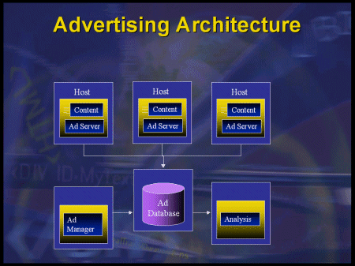
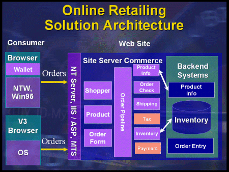
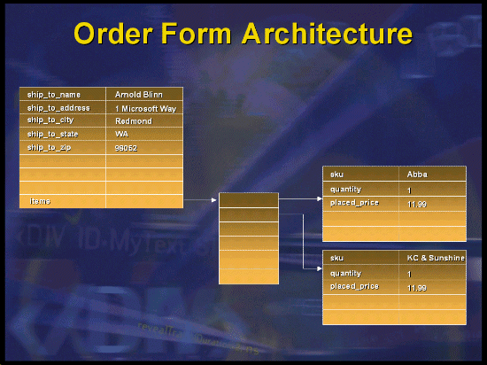
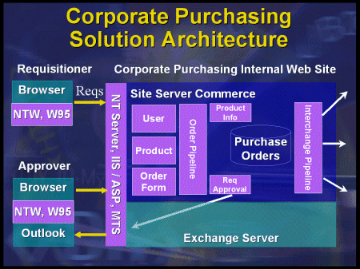
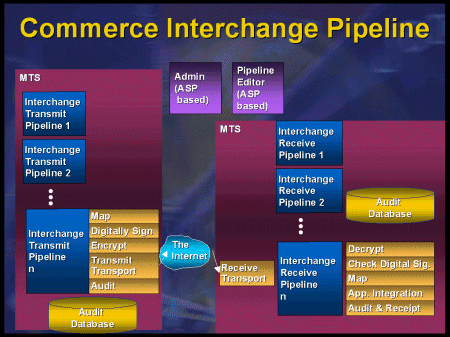

|
| ||
|
| ||
Sue Ledoux
Based on a presentation by Josh Axelrod and Arnold Blinn
Microsoft Corporation
February 11, 1998
Contents
Introduction
Opportunity, Challenges, and Solutions
E-Commerce Scenarios
E-Commerce Challenges and Solutions
Getting Started
Site Foundation Wizard
Store Builder Wizard
Other Tools
Online Retailing
Engaging Customers (a.k.a. Advertising)
Transacting with Retail Customers
Analysis
Corporate Purchasing
MS Market
Extended Value Chain
Commerce Interchange Pipeline
Microsoft Transaction Server Integration
In Summary
Additional Resources
This article is based on the presentation "E-Commerce Solution," by Josh Axelrod and Arnold Blinn at the Web Tech·Ed Conference, January 25-28, 1998, in Palm Springs, CA. Josh Axelrod and Arnold Blinn are members of the Commerce Server Product Unit at Microsoft. The "Solutions" series of presentations were geared towards demonstrating the use of multiple, complementary, integrated technologies to solve particular business needs.
(Microsoft will present additional Web-related technical-solution sessions in June at Tech·Ed 98 in New Orleans. See the Microsoft Events  site for details and registration information.)
site for details and registration information.)
There are three main solution scenarios that utilize e-commerce, and there are multiple e-commerce opportunities at each corporation for each solution:
Doing business over a network presents a number of challenges. Site Server Commerce and other related Microsoft technologies provide solutions to these challenges. The following summarizes the solutions provided for each of the challenges; many of these solutions will be discussed in greater detail later in the article.
Integration with existing systems. Companies can't afford to just throw out their existing systems. Instead, the pipeline architecture, which we'll explain later, makes it easy to integrate with existing systems. Components that interface with legacy systems can be written and inserted at any stage of the processing pipeline.
Cost of deployment. The cost of deploying an e-commerce solution has been brought way down, because Site Server Commerce 3.0 provides a host of tools and wizards to drastically reduce the time to deployment. Further savings are realized through the third-party components that are provided for the open pipeline architecture.
EDI meets the Internet. The Electronic Data Interchange (EDI) format is an existing data format standard used by trading partners to communicate transactions. The Commerce Interchange Pipeline in Site Server Commerce simplifies working with EDI, so you can start to automate the work you do with your partners.
Accepting payment. The Microsoft Open Payment Architecture allows third-parties to easily develop components (called "snap-ins") to handle any kind of payment processing. These components can plug into the Microsoft Wallet as well.
Security concerns. Security over networks is always an issue, and Site Server Commerce 3.0 addresses this by being completely integrated with Windows NT® Security, the Secure Socket Layer (SSL) of the Internet Information Server (IIS), and Microsoft Cryptographic Application Programming Interface (CryptoAPI). Site Server Commerce 3.0 is also compliant with the Secure Electronic Transmission (SET) standard.
"How do I engage my customers?" The 3.0 version of Site Server Commerce adds the tools and technologies required to do rich, accessible advertising, including complete control over serving of ads, targeted advertising (cross-sell, up-sell, intelligent cross-sell, etc.), buy-now, price promotions, and so on.
Scalability. We've taken advantage of the scalability inherent in Windows NT Server, SQL, and IIS. Site Server Commerce 3.0 is also now integrated with Microsoft Transaction Server (MTS), which gives you additional scalability.
This tool begins the process of creating a commerce site, by setting up the administrative and backend parts of your site. It lets you perform the following tasks:
This tool helps to build the Web site for the actual store (in this case, we mean a shopping kind of store, not a data store). The tool can also be accessed at any time after initial build, to change properties of the store site. Having this wizard separate from the Site Foundation Wizard provides an advantage if the site is hosted by an ISP. In this case, the host administrator can run the Site Foundation Wizard to set up the backend components, and the merchant can run the Store Builder Wizard to configure the site. And since all the tools are Web-based, the merchant can run them all remotely.
The Store Builder Wizard walks you through the following steps:
At this point, you can choose to load sample data into the database and run the store site to test and continue to work on it. Further tasks you might perform include:
Engage. New for this release are a number of tools to enable powerful and flexible advertising, promotions, cross-sell, buy-now, and customer targeting and personalization.
Transact. The core of the earlier versions, this order capture stage is now integrated with transaction systems, and has a much richer pipeline architecture and editing tools.
Analyze. Track sales activity, user activity, profiles, and preferences. Also includes site management functionality.
Retail commerce sites share the goal of attracting and retaining customers. This goal generally can be divided into two phases:

The Ad Manager is a powerful tool that lets you select and configure your advertising and promotion campaigns. There are a multitude of options to customize your campaigns; some examples of what you can do include:
Site Server Commerce also includes analysis tools that are used to generate reports about ad performance, such as number of clicks, click rates, number of ads shown, and so on. This data can then be used to refine future advertising campaigns.
The second part of the commerce cycle is the transaction phase, where the customer makes an actual purchase. Let's look at the following online retailing architecture diagram to see how Site Server Commerce implements this phase:

There are several interesting parts of the transaction process worth discussing: the Microsoft Wallet, pipelines, and the order form architecture.
The Microsoft Wallet is an ActiveX® control or a Netscape plug-in that encapsulates and saves customer information (such as name, address, credit card number), so that the user doesn't have to type it in every time. This adds convenience and consistency to the purchasing experience. The Wallet also transmits the information to the server in a secure way. The information that is transmitted looks just like a standard HTTP post, so any server can read the information, not just Site Server Commerce. It is freely available on the Web, as well as being bundled with Internet Explorer 4.0, Windows® 98 and Windows 2000, and is already in use by Site Server Commerce and other systems like Intershop and Mercantec.
Pipelines are one of the most useful features of Site Server Commerce and provide a flexible way to represent a business process. The pipeline architecture models a business process (e.g., a product order) into a framework consisting of a number of stages, each stage representing a discrete operation on a business object (e.g., an order form). At each stage, one or more specialized components operate on the object, then pass it to the next stage in the pipeline.
Fixed pipelines existed in Site Server Commerce 2.0, but version 3.0 allows customers to build their own pipelines. Site Server Commerce starts you out with 14 predefined stages for the order pipeline:
| Product Information |
| Merchant Information |
| Shopper Information |
| Order Initialization |
| Order Check |
| Item Price |
| Item Price Adjustment |
| Order Price Adjustment |
| Subtotal |
| Shipping |
| Handling |
| Tax |
| Total |
| Inventory Adjustment |
The pipeline architecture is extremely flexible. While Site Server Commerce ships an order pipeline initially configured with these stages, merchants can add or remove any stage if necessary. For example, if they wanted to add the capability for adding a gift message to a purchase, the merchant could add another stage in the pipeline to check if there was a gift message, and if so, validate the message and add a charge for it.
Another facet of the flexibility is in the components that process each stage. Site Server Commerce ships with a set of default components. However, there are also over 50 third parties providing components for many of the stages. For example, instead of a shipping component that simply calculates the shipping charge as a percentage of the order total, you can have a much more complex component that offers multiple shipping methods (e.g., ground or air) and calculates exact shipping costs based on shipping option and weight of the products.
Furthermore, all of the interfaces used to create a component are documented, so merchants can easily write their own components to even further customize their order pipeline.
We mentioned that an order form is an example of a business object on which the components of a pipeline operate. The order form in Site Server Commerce is simply an object that contains key-value pairs. The values can, in turn, point to lists of more key-value pairs. An illustration works best here:

Neither the order form object nor the underlying database have predefined schema associated with them; they are totally flexible, so the merchant can adapt to the needs of any products by adding additional key-value pairs.
The third part of the commerce cycle is analysis. Good analysis will help you understand customer and partner purchase and usage data, and factor in changes to maximize the return on investment on your commerce site or application. A number of different analysis options exist in Site Server Commerce to give you usage, content, customer, and order analysis, with flexible reporting options for all.
While, in many ways, corporate purchasing is a similar application to online retailing, there are some key differences. For example, credit card payments are replaced by cost center allocations. Requisition approval workflow needs to be added into the pipeline. Multiple catalogs need to be combined to present order choices. Submission formats can be more flexible (mail, fax, HTTP). And at the backend of the system, instead of an order operating on a local inventory, a whole new pipeline (the interchange pipeline) is accessed, as the requisitioned items are obtained from suppliers. (More on that end of it in the next section.) Once again, the pipeline architecture plays a hand in easily providing the flexibility needed to support these differences from the online retailing solution.
Here's a look at the architecture of the corporate purchasing solution:

MS Market is a corporate purchasing application we built at Microsoft using Site Server Commerce. It is a very high-volume application, processing thousands of orders a day and $1.6 billion per year. The benefits realized include lowered procurement costs, a speedier requisition process, and improved business controls. This application now ships with Site Server Commerce and is a fully-operational system that can form the foundation of your own corporate purchasing solution.
The commerce interchange pipeline provides a flexible framework to send data from one trading partner to another. That data can be sent in a variety of formats (such as XML or EDI) over a variety of transports (such as HTTP, SMTP, DCOM, EDI VANs). Once again, the use of the pipeline architecture means that new formats and transports can easily be added in the future.
The architecture of the commerce interchange pipeline is very similar to that of the order pipeline. In this case, there are actually two pipelines, one to send and one to receive.

Just like the order pipeline, the commerce interchange pipeline represents a business process. In this case, the stages of the pipeline contain things like map data, sign, encrypt, transmit, and audit. Like the order pipeline, each of these stages has a component that operates on the business object (in this case, a packet of data that the trading partners share), and these components are completely customizable.
Microsoft is participating in Value Chain Initiative (VCI), a consortium of over 100 partners dedicated to building applications that work up and down the value chain. We've recently demonstrated 12 applications that work together using the commerce interchange pipeline.
An important characteristic of pipelines in Site Server Commerce 3.0 is that they are now integrated with the Microsoft Transaction Server (MTS) architecture. This means that the entire pipeline can now be transacted as a single operation. This is important in many instances where the integrity of the process must be maintained. For example, you don't want your inventory debited until the credit card is approved. MTS gives Site Server Commerce a transaction language, as well as some load balancing features.
 Back to the Web Tech·Ed Solutions home page
Back to the Web Tech·Ed Solutions home page
Did you find this material useful? Gripes? Compliments? Suggestions for other articles? Write us!
© 1999 Microsoft Corporation. All rights reserved. Terms of use.